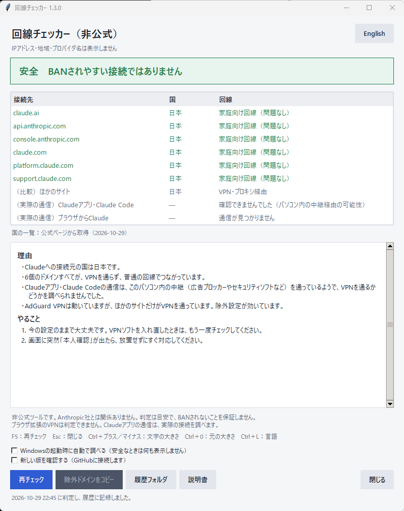

このパソコンのネットのつながり方が、
Anthropicから見てBANされやすい状態かどうかを判定するWindows 11用のアプリです。
非公式ツールです。Anthropic社とは関係ありません。
判定は目安で、
BANされないことを保証するものではありません。
くわしくは免責事項を読んでください。
インストールは不要です。回線チェッカー.exeと_internalフォルダは、
同じ場所に置いたまま使ってください。
右上のボタンで、
日本語と英語を切り替えられます。
選んだ言語は次回の起動でも使われます。
Windowsをダークモードにしていると、
アプリも暗い配色で表示されます。

次の場合も、
IPv4とIPv6で通る道が違うとき。
2つの判定サービスの答えが食い違ったとき。
通常の方法で確認できず、
別の方法で調べた参考値のとき。
| キー | できること |
|---|---|
F5 | 再チェック |
Esc | 閉じる |
Ctrl + ＋ / Ctrl + － | 文字を大きく／小さくする（0.8倍〜1.6倍） |
Ctrl + 0 | 文字の大きさを元に戻す |
Ctrl + L | 日本語と英語を切り替える |
画面の下の
サインインするたびに、
画面を出さずに調べます。安全なときは何も表示せずに終わります。要注意・危険のときと、
通信できなかったときだけ、
画面が開きます。
起動直後はネットにつながっていないことがあるので、
通信できないときは20秒おきに最大3回、
調べ直します。
やめるときは、
チェックを外します。
この設定は、
このアプリのexeで使えます。
起動したときにGitHubの最新版を調べて、
新しい版があれば画面の上に案内を出します。
ブラウザで開きます。
この設定はオフが初期値です。
表のいちばん下の2行に、
パソコンで動いているClaudeアプリ・Claude Codeと、ブラウザからClaudeへの、
実際の通信の結果を出します。
このパソコンの接続の一覧を読んで、
Claudeの通信が、
VPN用の仮想アダプターから出ているか、
ふつうのアダプター（有線LANやWi-Fi）から出ているかを調べます。
アプリ単位でVPNから外している場合でも、
実際の様子がわかります。
| 表示 | 意味 |
|---|---|
| VPNを通っていません（問題なし） | Claudeの通信は、 ふつうのアダプターから出ています。 |
| VPNを通っています | VPN用のアダプターから出ています。 除外の設定が効いていないか、 除外していません。 結論は |
| 一部がVPNを通っています | 通信によって、 経路が違います。 |
| 通信が見つかりません | Claudeアプリが起動していないか、 通信していません。 |
| 確認できませんでした（パソコン内の中継経由の可能性） | 広告ブロッカーやセキュリティソフトなどが通信を中継していて、 外への接続が見えませんでした。 ほかの行の結果を見てください。 |
調べられるのは、
TCPの通信です。
ブラウザがQUIC（UDPを使う通信）で接続している場合は、
見えません。
ブラウザの結果は、
Claudeの接続先に対する通信だけを数えます。
接続の一覧は、
判定のためだけに読み、
画面にも履歴にも、
保存も送信もしません。
前回の結果（last.json）と比べて、
結論が変わったときは、
VPNを入れ直して除外が消えたときなどに、
すぐ気づけます。
このアプリは、
アプリ自身の通信を使って判定します。
そのため、
次の場合は、
Claudeの実際の通信と結果が合わないことがあります。
NordVPN、
ExpressVPN、
Proton VPNなどは、
ドメインではなくアプリ単位でVPNから外す方式です。
Claudeのアプリだけを外していると、
回線チェッカー自身はVPNを通るので、
結果は
正しく判定するには、
Claudeのアプリやブラウザと一緒に、回線チェッカー.exeもVPNから外してください。
v1.3.0から：Claudeアプリ・Claude Codeの実際の通信を調べて、
アプリ単位でVPNから外している場合でも、
結果を見直すようになりました。
チェッカー自身はVPNを通っていて、
Claudeアプリは直接つながっているときは、
そのことを説明します。
くわしくは
Chromeなどの拡張機能として動くVPNは、
ブラウザの通信だけを通します。
このアプリからは見えないので、
ブラウザ版のClaudeがVPNを通っていても
ブラウザ版のClaudeを使うときは、
拡張機能のVPNをオフにしてください。
IPv4とIPv6の両方を調べます。
IPv6が使えない環境では、
IPv4だけで判定します。
IPv4はVPNを通っているのに、
IPv6だけが直接つながっている場合は、
自動プロキシ設定（PACファイル）を使うネットワークでは、
会社や学校が管理するVPNは、
自分で設定を変えずに、
管理者に相談してください。
| VPNソフト | 除外の方式 | 設定の場所 |
|---|---|---|
| AdGuard VPN | ドメイン | |
| Surfshark | ドメイン | |
| Windscribe | ドメイン | |
| Cloudflare WARP | ドメイン | |
| NordVPN | アプリ | |
| ExpressVPN | アプリ | |
| Proton VPN | アプリ |
メニューの名前は、
VPNソフトのバージョンによって変わることがあります。
アプリ単位の方式では、
Claudeのアプリ、
ブラウザ、回線チェッカー.exeを外してください。
AdGuard VPNで
前後に空白が入っているか、
全角になっています。
入力欄を空にして、
半角で打ち直してください。
すぐに直せないときは、
Claudeを使う間だけVPNをオフにしてください。
VPNの接続先が海外になっています。
接続先を日本など利用対象の国にするか、
VPNをオフにしてください。
接続先の国をたびたび変えるのも、
疑われる原因になると言われています。
少し待ってから
続く場合は、
広告ブロッカー（AdGuardなど）が通信を止めている可能性があります。
広告ブロッカーを一時的にオフにして試してください。
判定するたびに、
次の場所のhistory.csvに1行ずつ追加します。
Excelでも開けます。
%LOCALAPPDATA%\KaisenChecker\history.csv
| 列 | 内容 |
|---|---|
| 日時 | 判定した日時 |
| 結論 | 安全／要注意／危険 |
| 各ドメイン | OK／VPN経由／対象外の国／確認不可 |
| VPNソフト | 動いていたVPNソフトの名前 |
| Windowsプロキシ | オン／オフ |
IPアドレス、
地域、
プロバイダ名は記録しません。
Excelで開いたまま判定すると保存できないので、
閉じてから判定してください。
英語表示で判定した行は、
英語で記録されます。
同じフォルダには、
言語の設定（settings.json）と、
前回取得した国の一覧（countries.json）も保存されます。
アプリを削除するときは、
このフォルダも消してください。
このアプリには電子署名がないため、
Windowsやウイルス対策ソフトに警告されることがあります。
配布ページに載っているSHA-256の値と、
ダウンロードしたzipファイルの値が同じなら、
途中で書き換えられていません。
PowerShellで次のように確かめられます。
Get-FileHash .\KaisenChecker_v1.3.0.zip -Algorithm SHA256
claude.ai、anthropic.com、claude.comの系列だけを使い、| 調べるドメイン | 使われる場面 |
|---|---|
claude.ai | Claudeのアプリとウェブ版 |
api.anthropic.com | Claude CodeとAPI |
console.anthropic.com | 開発者向けの管理画面 |
claude.com | 公式サイト |
platform.claude.com | Claude Codeのログインと管理画面 |
support.claude.com | サポートと異議申し立て |
Anthropicは判定の基準を公開していません。
この結果は
| 回線チェッカー.exe | アプリ本体 |
| _internal | アプリの動作に必要なファイル（消さないでください） |
| 説明書.html | この説明書 |
| 画面.png | 説明書で使う画面の画像 |
| README.md | 概要 |
| 回線チェッカー取説.exe | やさしい取説（日本語・英語。 ダブルクリックでブラウザに開きます） |
| Manual_en.html | 英語版の説明書 |
| screen_en.png | 英語版の説明書で使う画面の画像 |
| LICENSE | ライセンス（MIT License） |